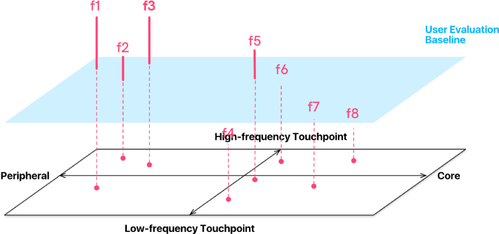
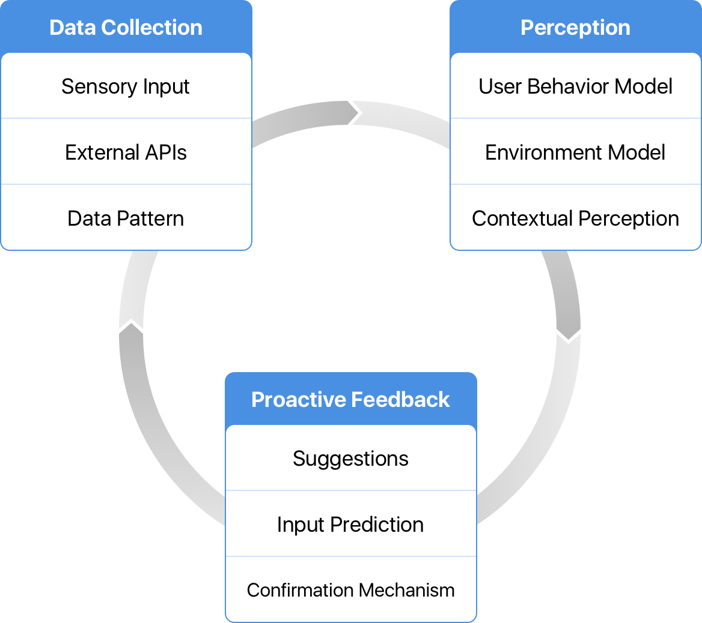

In late 2015, Groupe PSA, a leading French automobile manufacturer sold under the Peugeot, Citroën, DS, Opel and Vauxhall brands, started a collaboration with our lab (Center for Digital Innovation, Tongji University) to design a concept car human-machine interface (HMI), the company’s next-generation product (2017). With all the new multi-sensory technology, PSA wanted a better, yet simpler solution for their customers.
I was the design lead in Tongji’s team which designed the HMI foundation and the immersive test environment. Building a more powerful and capable system with less user distraction was a difficult task, so we started with reimagining the way users interact with their cars.
Analyzing the prophase user research report from PSA, we listed the main touchpoints at the system level and mapped related pain points on them. One of our most important findings was that for almost all the touchpoints, despite a few complaints about asking for a feature or fix, slow and complicated interaction was the top pain point. It seemed users are not enjoying doing anything on the touch screens inside their cars.
So what now? Maybe going back to analog controls? It did not feel like a good idea to put a physical keyboard on the steering wheel though. To tackle the actual problem, I asked a question:
I found the question too vague and broad. The current touchscreen-based system is actually designed to be pretty similar to the systems on smartphones people are using every day. There seemed to be no answer in this UI and feature dimension, so I took one step backward and started thinking on a lower level. This time, I rephrased the question on the user behaviour and cognition level:
A more straight-forward answer to this question could be complex functionality. But by digging one level deeper, I realized the reason behind it is the higher cognitive load. Users are less capable to manipulate things because driving is already a major task which demands a lot of concentration, and safety is an essential requirement.
So the core is not only about how the UI is optimized but the interaction mechanism behind the entire UI.
How might we make the system-human interaction mechanism better? Inspired by Siri Proactive in iOS 9, we tried to develop a more generic framework to enable proactivity across the system. With the help of PSA engineers, I designed the Proactive Mechanism for our system.
The ideal process of a proactive interaction contains three phases. First, the process has to be triggered by a certain input or data pattern. For example, the interior camera sensor detecting a new passenger, or the current time matching the car’s history of locations at this time on other days. Next, the system will build a perception model of user behavior, the environment, and the context. For example, the rear seats are empty and the rear zone AC is on. Finally, the system will make responses in certain ways such as suggesting or executing tasks. A confirmation process will be executed following the response to give inputs to the system data pattern. A simple example of this phase is the system turning off the rear zone AC and marking this action ‘positive’ since the user did not reverse the change.
With the mechanism as a framework, we reimagined the basic user flows for the core features. Instead of users starting the flow, the system now proposes task requirements to start the interaction and even complete the whole flow automatically in some cases such as finding parking spaces in navigation when the car is arriving at a new destination.
My team worked closely with PSA test team to make sure the new design was concrete and technically feasible. The system is not only a sleek concept to showcase but also a guideline and roadmap for their next generation product. We conducted several internal tests with the customized HMI Simulation Test Platform.
With the system-wide proactive mechanism, proper functions and data will be displayed without user manipulation. The UI is neat and self-organized, we made most of the tasks accessible within 1 step in corresponding use scenarios.
The system presents scenario predictions and task suggestions in various built-in apps such as Navigation and Cabin Ambient. For example, Navigation will recommend the most likely destination and suggest a POI search according to environmental information. The suggestion-based flow is designed in almost every part of the infotainment system to reduce the need for user manipulation.
Also, cooperated with the camera sensor and the skin temperature sensor, the system is able to proactively adjust the ambient light and fragrance, and change the zone temperature.
The system presents scenario predictions and task suggestions in various built-in apps such as Navigation and Cabin Ambient. For example, Navigation will recommend the most likely destination and suggest a POI search according to environmental information. The suggestion-based flow is designed in almost every part of the infotainment system to reduce the need for user manipulation.
The instrument cluster was redesigned to be more adaptive and less obtrusive. We started from a windshield-projection HUD, but we found it was hard to recognize in some of our simulation scenarios. This reimagined belt-like display is located slightly lower than the windshield, having similar low view obstruction of the HUD with a larger canvas and a better display.
There are many different ways to do a concept design project for different purposes, and I think being innovative is never one of them. Being innovative is a constant practice; a long-term design strategy for any product design project that ultimately allows the design to achieve its goals. In this concept development, to be specific, the purpose was to inspire, and the goal was to make the system more powerful, yet simpler. We chose to do it differently, but only because we asked more and deeper questions. To be different was not and should not be the intention or a strategy, it was one of the things we got, after the journey of finding the solution.
Talking about learning from mistakes sounds like a cliche, but it is especially true in a solution-oriented concept design project like this. There was more space to explore, so more mistakes to make. During the process of tackling the problems, the mistakes I made were like the air inside the bottle I was in. They kept growing and pushing me to the right track to the outside. It was harder at the near end, the bottleneck, but I suddenly felt the click at the moment I was pushed out. The egg popped out of the bottle. It was not only about that moment, but I also realized how important the mistakes and on-going learnings are for allowing this to happen.